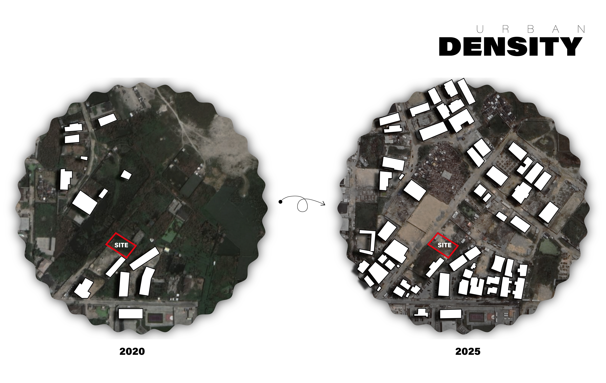
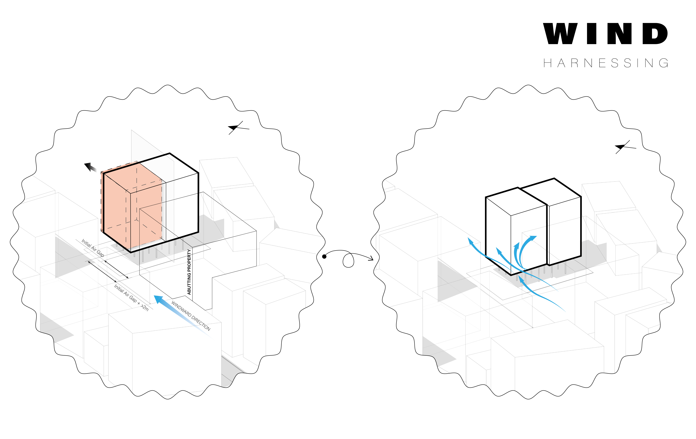
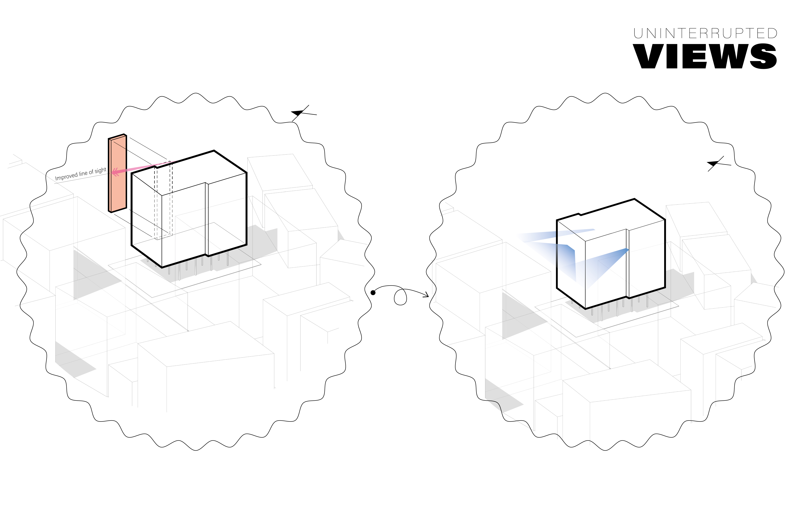
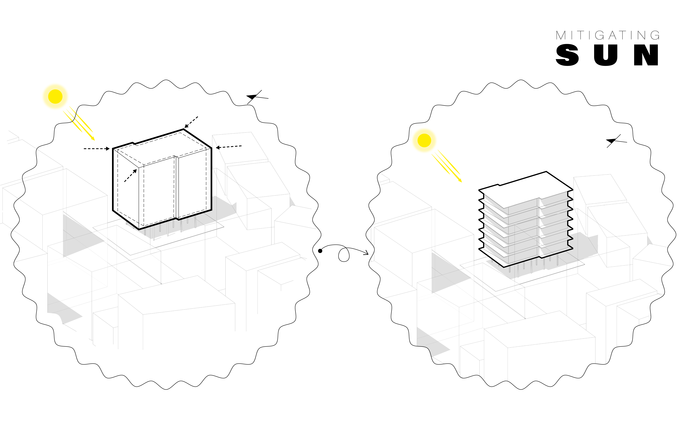
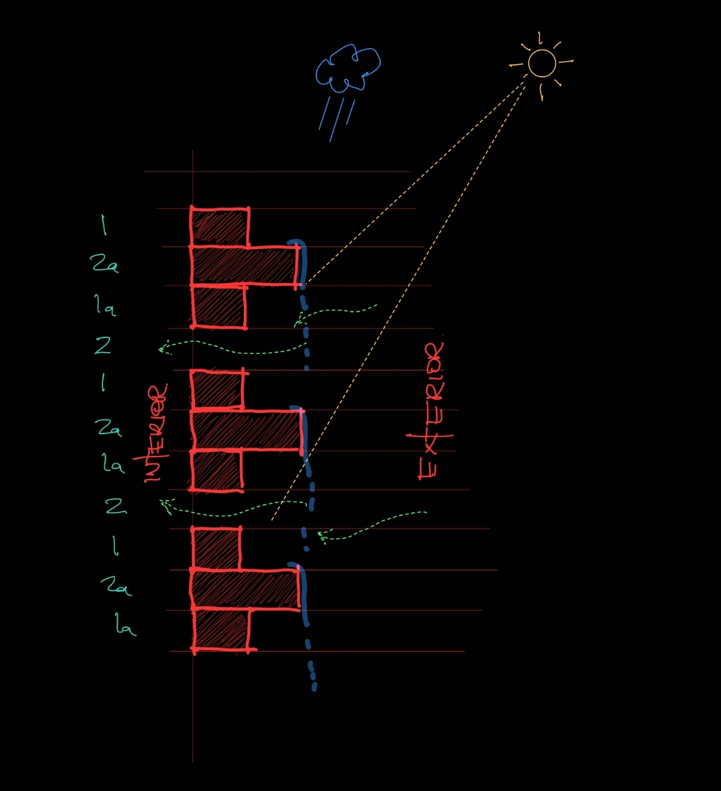
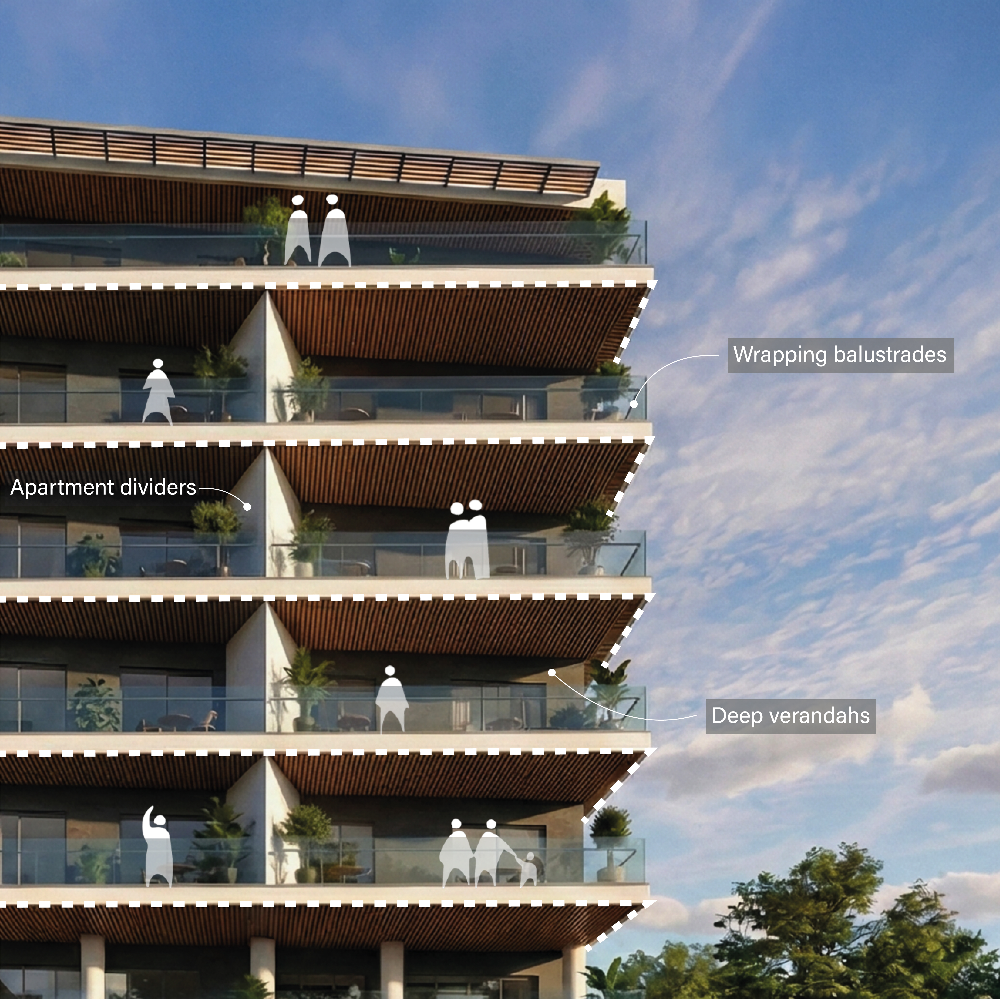
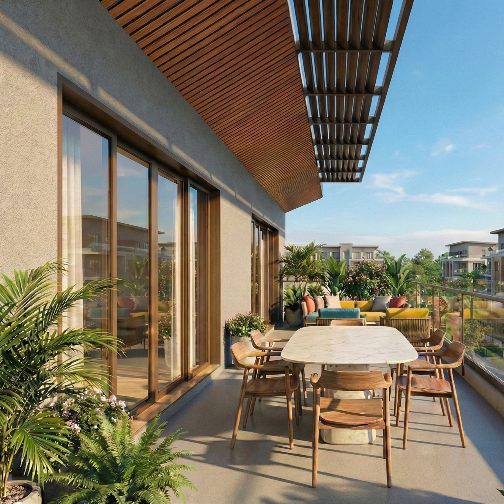
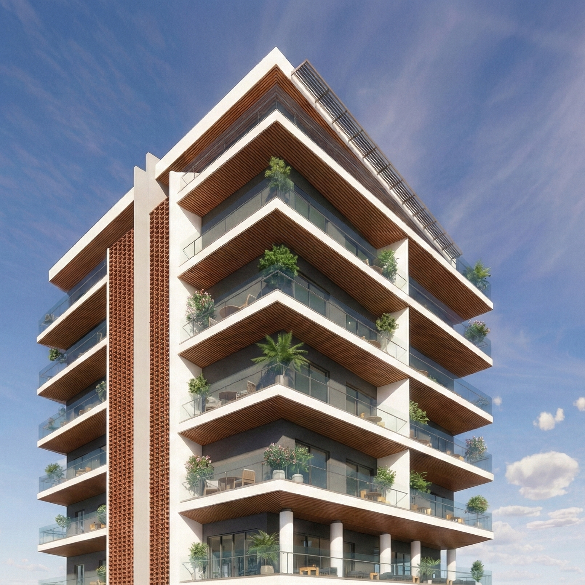
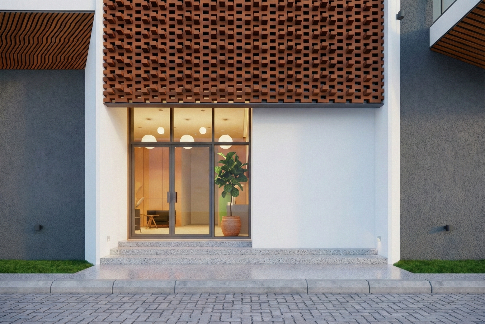
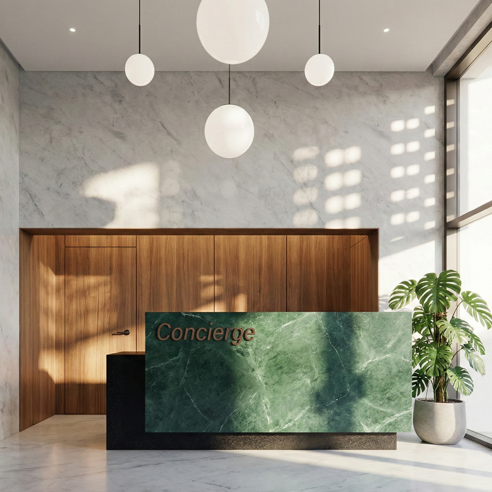

Architecture
6Stack: Re-imagining the West African Landscape Through Climate, Culture and Continuity
A DESIGN PROPOSAL BY CCWORKSHOP

Stack is a six-storey residential design proposal comprising 20 residential district of Lagos, the project explores a fundamental question:
how can contemporary architecture in West Africa remain responsive to its environment while retaining a meaningful connection to the cultural landscapes from which it emerges?
For Architectural Design Studio CCWorkshop, the answer lies in rejecting the conventional approach of reproducing vernacular architecture literally and treating culture as an applied aesthetic.
Instead, 6Stack explores vernacular architecture as a process of adaptation: a way of making architecture that responds to climate, available resources, patterns of living, and the social realities of its time. The project therefore begins with the environment.
Rapid urbanisation increasingly places pressure on some of the qualities that have historically made tropical environments comfortable and habitable: access to airflow, daylight, views, shade, and a meaningful relationship with the natural environment.
A BIOCLIMATIC RESPONSE

Three conditions became particularly important in developing 6Stack: air movement around and through the building, visual connection to the outdoors, and thermal comfort without excessive dependence on mechanical systems. Rather than treating these as technical considerations to be resolved after the form had been established, they became generators of the architecture itself.
The building mass was divided into two volumes and offset from one another, creating greater permeability around the building and improving opportunities for cross-ventilation. This configuration also allows apartments to maintain stronger visual connections with the surrounding environment despite the constraints of a dense urban setting.



Rather than reproducing the style, 6Stack abstracts one of its defining spatial characteristics: shaded verandah as a mediator between building and environment.
The resulting architecture draws from a particular layer of Lagos's architectural history: the Afro-Brazilian buildings introduced and developed by formerly enslaved Africans who returned from Brazil and established communities across West Africa.
The building envelope was then carved and recessed in response to solar exposure. These recesses produce deep verandahs that shade both the facade and the spaces behind it, reducing direct solar heat gain while creating transitional spaces between interior and exterior.

“In this sense, the form of 6Stack is not simply an expression of an architectural idea. The form is the environmental strategy.”
VERNACULAR AS CONTINUITY, NOT REPLICATION

Historically, the verandah provided shade, encouraged ventilation, extended domestic life outdoors, and created a gradual transition between private interior spaces and the public realm. In 6Stack, this familiar spatial logic is reinterpreted within a contemporary apartment building.

This is where we see the potential of a new vernacular. Vernacular architecture has never been static. It evolves as climates, technologies, economies, materials, and ways of living change. Cultural continuity therefore does not require preserving a particular form unchanged. It can also mean allowing the underlying intelligence of that form to endure, mutate, and find relevance in new circumstances.
6Stack becomes an exploration of this continuity: a contemporary building informed by a historical architectural memory, but shaped by the environmental and socioeconomic realities of present-day Lagos.
AFROMINIMALISM AS ABSTRACTION
The project approaches Afrominimalism not as the addition of recognisably African motifs, but as an exercise in reduction, abstraction, and reinterpretation.
The architectural language is deliberately restrained. The deep verandahs, recessed walls, rhythmic openings, screens, and structural projections are derived from environmental and spatial requirements, while their composition gives the building a distinct cultural expression.


On the side elevations, modular clay block screens introduce a porous layer to the facade. They filter direct sunlight while maintaining airflow and visual permeability, creating a relationship between enclosure and openness that is characteristic of many tropical architectural traditions.
Rather than decorating the building with references to place, the project attempts to make place legible through performance. The architecture becomes African not because it applies a predetermined visual vocabulary, but because its spatial and environmental logic is rooted in the conditions of West African life.

SUSTAINABILITY AS DESIGN INTELLIGENCE
At 6Stack, sustainability is approached as a design advantage rather than a collection of technologies added to an otherwise complete building.

At roof level, gutters collect rainwater for potential reuse, while photovoltaic panels transform the roof into an active environmental surface capable of harvesting solar energy. Together, these strategies reduce the building's environmental demand while improving the quality of the spaces it produces.
For us, this is ultimately what sustainability in architecture should offer: not simply a more efficient building, but a better relationship between building, climate, culture, and people.
Solar control is embedded within the building form through recessed facades, deep verandahs, and carefully articulated projections that provide shade and reduce rain ingress. Porous clay screens moderate sunlight while supporting ventilation within the circulation spaces.
TOWARDS A NEW WEST AFRICAN VERNACULAR
The result is an architecture that does not seek to recreate the past, but to continue its conversation.
6Stack is therefore less an attempt to define what a contemporary West African building should look like and more an exploration of how one might emerge.
If vernacular architecture is architecture that exemplifies the emergence of buildings and settlements as a result of adaptation to natural conditions in architectural principles, in which the bioclimatic response to the conditions of the natural environment is emphasised (Rajkovic et al., 2022).
It begins with the realities of Lagos: increasing density, a demanding tropical climate, limited urban permeability, changing patterns of living, and the need to build more resource-efficiently. It looks backward to architectural traditions that evolved through similar negotiations between climate, culture, and everyday life. It then brings these ideas forward through contemporary construction, abstraction, and restraint.
“6Stack proposes that the new vernacular is not a style. It is a way of thinking: architecture that belongs to its climate, its culture, its economy, and its time.”
ccworkshop.design